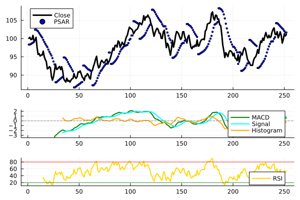

Momentum Indicators
Example
using Indicators, Plots, Random
Random.seed!(1)
N = 252
c = 100 .+ cumsum(randn(N))
o = [c[1]; c[1:end-1]]
h = max.(o, c) .+ abs.(randn(N))
l = min.(o, c) .- abs.(randn(N))
m = macd(c)
r = rsi(c)
p = psar(h, l)
f1 = plot(c, linewidth=3, color=:black, label="Close")
scatter!(p, color=:blue, markersize=2, label="PSAR")
f2 = plot([m.macd m.signal m.histogram], linewidth=2, color=[:green :cyan :orange],
label=["MACD" "Signal" "Histogram"])
hline!([0.0], linestyle=:dash, color=:grey, label="")
f3 = plot(r, linewidth=2, color=:gold, label="RSI")
hline!([20, 80], linestyle=:dot, color=[:green, :red], label="")
plot(f1, f2, f3, layout=@layout[a{0.6h}; b{0.2h}; c{0.2h}])"/home/runner/work/Indicators.jl/Indicators.jl/docs/build/mom_example.svg"
Reference
Indicators.adx — Method
adx(high::AbstractVector{<:Real}, low::AbstractVector{<:Real}, close::AbstractVector{<:Real}; n::Int=14, ma::Function=ema, args...)Average directional index
Extra keyword arguments are passed to the moving average ma, e.g. wilder=true for Wilder smoothing with the default ema.
Output
A NamedTuple (di_plus, di_minus, adx).
Indicators.aroon — Method
aroon(high::AbstractVector{<:Real}, low::AbstractVector{<:Real}; n::Int=25)Aroon up/down/oscillator
Output
A NamedTuple (up, down, osc).
Indicators.cci — Method
cci(high::AbstractVector{<:Real}, low::AbstractVector{<:Real}, close::AbstractVector{<:Real}; n::Int=20, c::Real=0.015, ma::Function=sma, args...)::Vector{Float64}Commodity channel index
Extra keyword arguments are passed to the moving average ma.
Indicators.donch — Method
donch(high::AbstractVector{<:Real}, low::AbstractVector{<:Real}; n::Int=10, inclusive::Bool=true)Donchian channel (if inclusive is set to true, will include current bar in calculations.)
Output
A NamedTuple (lower, mid, upper): the lowest low, the average of the lowest low and highest high, and the highest high of the last n periods.
Indicators.heikinashi — Method
heikinashi(open::AbstractVector{<:Real}, high::AbstractVector{<:Real}, low::AbstractVector{<:Real}, close::AbstractVector{<:Real})Heikin Ashi
Output
A NamedTuple (open, high, low, close):
- open – previous (o+c)/2
- high – max(o,h)
- low – min(o,l)
- close – (o+h+l+c)/4
Indicators.ichimoku — Method
ichimoku(high::AbstractVector{<:Real}, low::AbstractVector{<:Real}, close::AbstractVector{<:Real}; params=(9, 26, 26, 52, -26))Ichimoku Kinko Hyo
Output
A NamedTuple (tenkan, kijun, senkou_a, senkou_b, chikou).
Indicators.kst — Method
kst(x::AbstractVector{<:Real}; nroc::AbstractVector{<:Integer}=[10,15,20,30], navg::AbstractVector{<:Integer}=[10,10,10,15], wgts::AbstractVector{<:Real}=collect(1:length(nroc)), ma::Function=sma)::Vector{Float64}KST (Know Sure Thing) – smoothed and summed rates of change
Indicators.macd — Method
macd(x::AbstractVector{<:Real}; nfast::Int=12, nslow::Int=26, nsig::Int=9, fast_ma::Function=ema, slow_ma::Function=ema, signal_ma::Function=sma)Moving average convergence-divergence
Output
A NamedTuple (macd, signal, histogram).
Indicators.momentum — Method
momentum(x::AbstractVector{<:Real}; n::Int=1)::Vector{Float64}Momentum indicator (price now vs price n periods back)
Indicators.psar — Method
psar(high::AbstractVector{<:Real}, low::AbstractVector{<:Real}; af_min::Real=0.02, af_max::Real=0.2, af_inc::Real=af_min)::Vector{Float64}Parabolic stop and reverse (SAR)
Arguments
high,low: high and low pricesaf_min: starting/initial value for acceleration factoraf_max: maximum acceleration factor (accel factor capped at this value)af_inc: increment to the acceleration factor (speed of increase in accel factor)
Indicators.roc — Method
roc(x::AbstractVector{<:Real}; n::Int=1)::Vector{Float64}Rate of change indicator (percent change between i'th observation and (i-n)'th observation)
Indicators.rsi — Method
rsi(x::AbstractVector{<:Real}; n::Int=14, ma::Function=ema, args...)::Vector{Float64}Relative strength index
Extra keyword arguments are passed to the moving average ma.
Indicators.smi — Method
smi(high::AbstractVector{<:Real}, low::AbstractVector{<:Real}, close::AbstractVector{<:Real}; n::Int=13, nfast::Int=2, nslow::Int=25, nsig::Int=9, fast_ma::Function=ema, slow_ma::Function=ema, signal_ma::Function=sma)SMI (stochastic momentum oscillator)
Output
A NamedTuple (smi, signal).
Indicators.stoch — Method
stoch(high::AbstractVector{<:Real}, low::AbstractVector{<:Real}, close::AbstractVector{<:Real}; nk::Int=14, nd::Int=3, kind::Symbol=:fast, ma::Function=sma, args...)Stochastic oscillator (fast or slow)
Extra keyword arguments are passed to the moving average ma.
Output
A NamedTuple (k, d) of the %K and %D lines.
Indicators.wpr — Method
wpr(high::AbstractVector{<:Real}, low::AbstractVector{<:Real}, close::AbstractVector{<:Real}; n::Int=14)::Vector{Float64}Williams %R